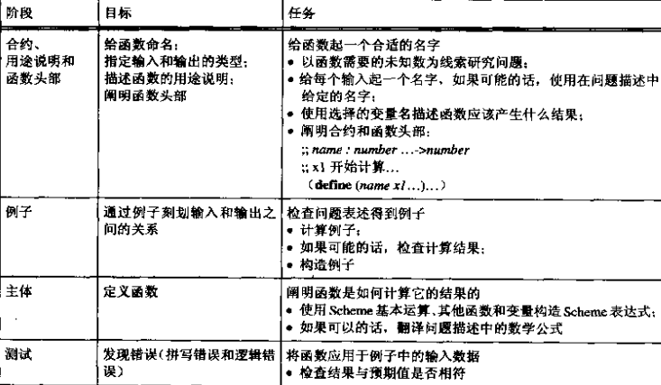
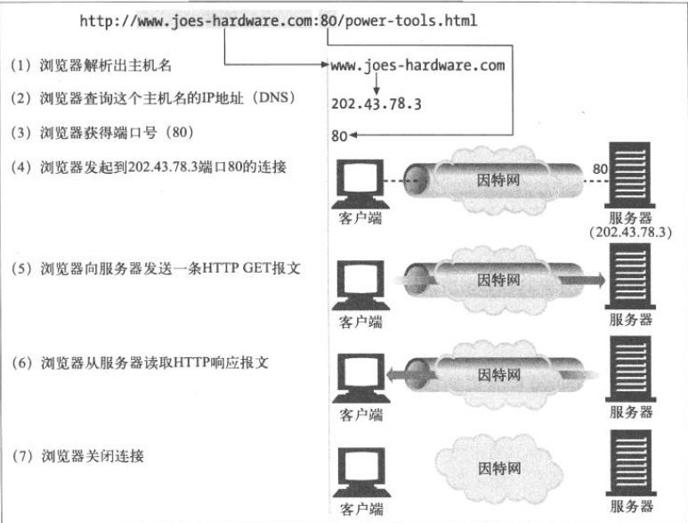
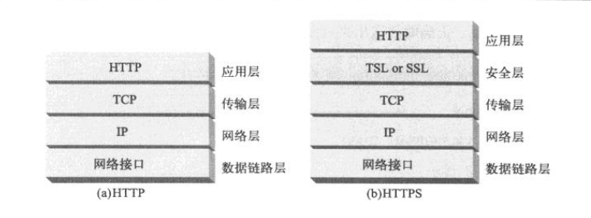
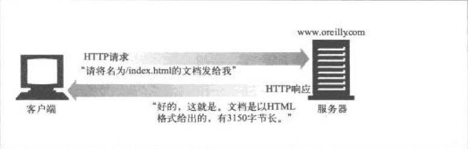
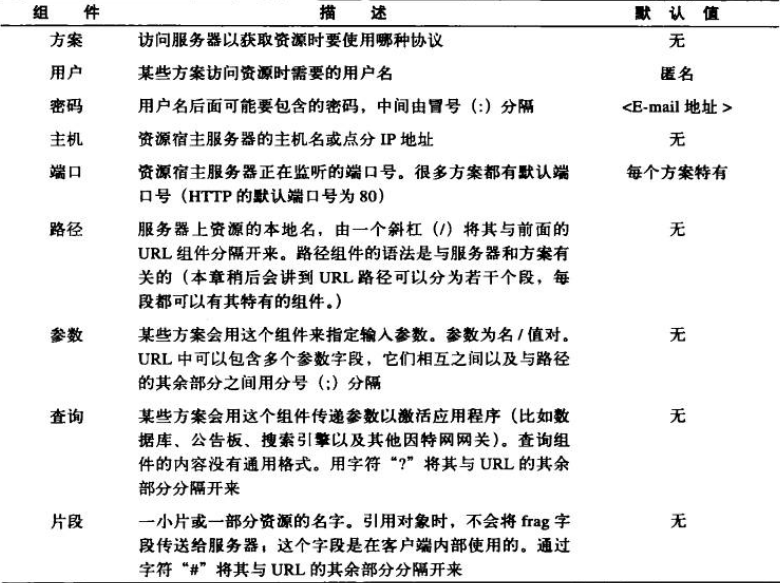

HTDP第三章：程序就是函数加上变量定义
函数复合
电影院定制电影票价格的代码如下：
;; profit: number -> number ;; 利润 (define (profit ticket-price) (- (revenue ticket-price) (cost ticket-price))) ;; revenue: number -> number ;; 收入 (define (revenue ticket-price) (* (attendees ticket-price) ticket-price)) ;; cost: number -> number ;; 支出 (define (cost ticket-price) (+ 180 (* 0.04 (attendees ticket-price)))) ;; attendees: number -> number ;; 观众数 (define (attendees ticket-price) (+ 120 (* 10 (- 5.0 ticket-price) 15)))
上面是使用辅助函数实现的代码。由该问题引出一条程序设计原则 ...
HTDP第二章：数、表达式和简单程序
这一章开始4小段简单介绍了一下Scheme语法。
Scheme的语法相当简单，所以廖廖几页就说完了。
相关的习题也是讲解：
各种不符合Scheme语法情况下的代码的运行出错提示是什么。
2.5段则给出了一个 设计诀窍 表格。 其实就是设计一个函数的具体步骤有哪些。
程序设计原则
这里我也具体列出下面每章都会提及的程序设计原则。
辅助函数原则
对在表述中所提到的或在进行实例计算中所发现的每种依赖关系 都使用一个辅助函数进行明确表达。
变量定义原则
给频繁使用的常量定义一个名字，并在程序中使用。
HTDP第一章：学生、老师和计算机
第一章对程序设计这个概念作了一个简单介绍。
我在这里简单说介绍一下 HTDP 用到的教学软件包。
- 从 Racket官方网站 下载最新版本的Racket软件。
- 运行命令 drracket 。
- 在 语言 中 选择语言... 选择 教学语言(ctl-T) 。
- 级别随便选择，我一开始做习题就是选择 初级 。
- 然后根据课后习题的要求，在 语言 中选择 加载教学包... 。
《HTTP权威指南》笔记 第四章 连接管理
Contents
HTTP的连接过程
HTTP连接本质上就是TCP连接和一些使用连接的规则。
HTTP和HTTPS网络协议栈区别
HTTPS连接其中就是在HTTP和TCP层之间插入一个TSL/SSL层。
HTTP要传送一条报文时， 会以流的形式将报文数据通过一条打开的TCP连接按序传输。
TCP收到数据流后，会将数据流分成多个小段， 并将该段封装在IP分组中。
每个IP分组包括：
- 一个IP分组首部（通常为20个字节）
- 一个TCP段首部（通常为20个字节）
- 一个TCP数据块（0个或者多个字节）
《HTTP权威指南》笔记 第一章 HTTP概述
这一章主要介绍了HTTP协议的一些基本概念， 这样大家会对HTTP有一个基本的了解。
Web客户端和服务器

媒体类型
资源多了，就要分类。HTTP采用了MIME类型。 MIME类型原来是在邮件里面使用的，由于它很成熟也很好用， 所以HTTP也采用了。
Web服务器会为所有的HTTP对象数据附加一个MIME类型。
当浏览器从服务器中取回一个对象时，会去查看相关的MIME类型， 这样它就知道如何处理这个对象了。
常用MIME类型举例：
- HTML格式的文本文档：text/tml
- 普通的ASCII文本文档：text/plain
- JPEG格式的图片：image/jpeg
URI
Uniform Resource Idenifier: 统一资源标识符 ...
《HTTP权威指南》笔记 第二章 URL与资源
URL语法
大多数URL的格式：
<scheme>://<user>:<password>@<host>:<port>/<path>;<params>?<query>#<frag>
其中最重要的是scheme, host, path。

转义字符
为了在URL中表示各种不安全的字符， 需要在URL用转义字符来表示这些不安全的字符。
这种转义表示法包含一个百分号，后面跟着两个表示字符ASCII码的16进制数。
| 字符 | ASCII码 | 示例URL |
|---|---|---|
| ~ | 126(0x7E) | http://www.joes-hardware.com/%7Ejoe |
| 空格 | 32(0x20) | http://www.joes-hardware.com/more%20tools.html |
保留字符
在URL中 ...
《HTTP权威指南》笔记 第三章 HTTP报文
setuptools指南：未完待续
以下内容是根据官方文档做的笔记。
Contents
推荐用法
在项目根目录添加 ez_setup.py 文件， 然后在setup.py文件的开头添加如下代码：
from ez_setup import use_setuptools use_setuptools()
这样写的话，其他人安装你的Python包时， 如果没有安装setuptools工具，该脚本就会自动下载并安装setuptools。
当然也可以通过这个脚本来直接安装、更新setuptools：
$ sudo python ez_setup.py -U setuptools